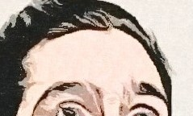
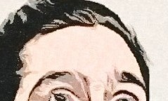
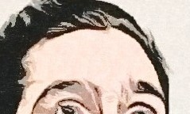

Hello, my name is
Jayke T. ,
I'm a recent graduate from Code Lousville. So now , I have the skills and knowledge to be hired as a Junior Web Developer.
come and get me!

My certification and education,